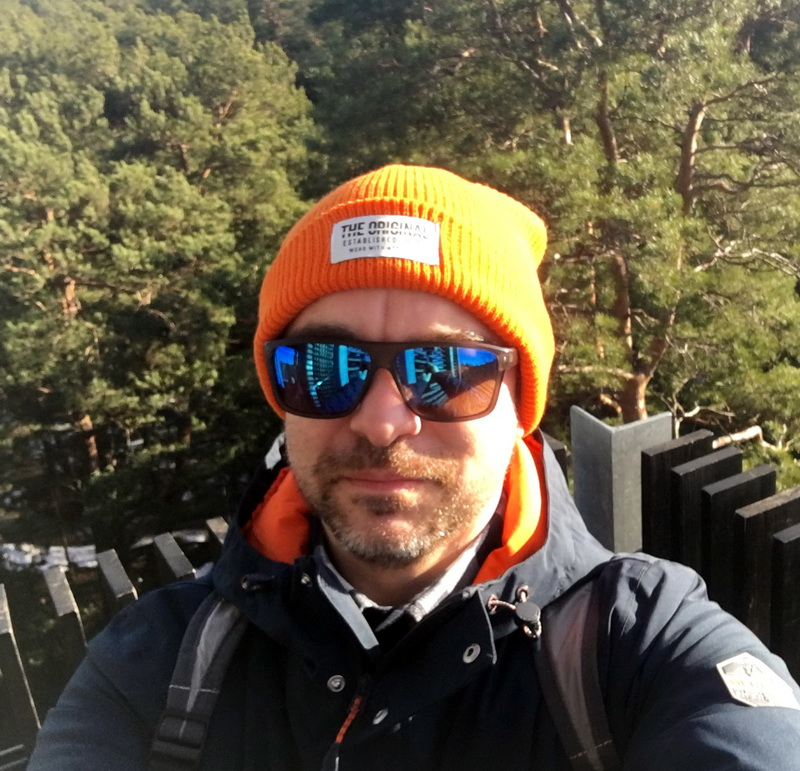

Siarhei Straltsou CV, ver. 0.2

1. Name
Siarhei Straltsou
3. Summary
something about me
4. Skills
- Python3,
- Delphi 7/Embarcadero RAD Studio,
- BDE,
- SQL (Sqlite, PostgreSQL, MySQL),
- NoSQL (mongoDB),
- HTML/CSS/JS,
- Git.
- IDE:
- JetBrains PyCharm,
- MS VS Code,
- IDLE,
- Notepad++.
- Can read code and little write: Java, C#, C++.
- OS stack:
- MS Windows 7 - 10,
- Linux (Debian-based distros).
5. Software projects
- NSI (stack: Delphi, Borland Database Engine, SQL; year: 1998) - maintenance of regulatory and reference information of the enterprise for the production of reinforced concrete products and structures.
- RomeNBH (stack: Delphi 7; year: 2011) - region-lock patcher for firmware files for HTC Rome smartphone. Search region-lock signature and change it for compatibility with RU-region firmware.
- SubaruDTC (stack: Delphi 7; year: 2013) - analyze firmware binary file from Subaru cars with Denso ECU and create xml-definition for editing error map of firmware.
- Some of spiders on Python (dnk.by, unistar.by, vetervremeni.by, onliner.by, 5element.by, funtastik.by, siemens.ru, etc. (stack: Python 3.5, grab, mysql, re, base64, PIL image lib, urllib, selenium, mongoDB, BS4).
- Energenie library (stack: Python 3.5, requests, argparse; year: 2017) - library for remote control smart sockets Energenie series EG-PM2-LAN, EG-PMS2-LAN, EGM-PWM-LAN, EG-PMS2-WLAN, EG-PM1W-001. Capabilities: login/logout to smart socket, on/off/revert power, get sockets status.
- Telegram bots (stack: Python 2.7/3.5, requests, subprocess, os, random, energenie; year: 2016-2017) - a Telegram platform test, provides random jokes, takes them from the bash.im site, and bot for sending language file for internationalization Telegram interface in Android & iOS devices, remote control of sockets, take photos from ip-cams, reading data from sensors. Works on any computer with the Internet, does not require a dedicated white ip-address.
- onliner.by competitors analytic (stack: Python 3.5, csv, requests, xlwt, configparser, argparse - core, Delphi RAD Studio 10.2 – GUI for edit ini-file; year: 2015-2019) - processing of prices, analysis of competitors prices, creation of analytic files and recommended prices for online store, upload/download data files via REST API.
6. Career summary
Jun 2018 - now, 100Nuts Ltd., www.100nuts.ai, Software engineer/Python developer.
Creating, maintenance and support software for parsing data from a wide range of sites (Python 3.5, MongoDB, data parsing frameworks).
Aug 2017 - Oct 2018, JSC 'Belenergoremnaladka', www.bern.by, Delphi developer.
Completion, maintenance and support of a software package for the calculation of TEP for Thermal power plant (Embarcadero Delphi 10). Auxiliary software (Python 3).
Dec 2016 – Aug 2017, self-employed.
Support the onliner.by competitors analytic project, developed on Python 3.5 (GUI for setup on Delphi). Support some projects for own use.
Jan 2012 – Nov 2016, JSC 'First Service Technology', service center 'rempark.by', sw & hw engineer.
Repair of mobile terminals (software and hardware), update and restore firmware with service software, experience with programmers, including JTAG, reading schematic diagrams, installation and adjustment of software for laptops and PC.
7. Education
- 1999 – 2001 Belarusian National Technical University.
Faculty "Information Technologies and Robotics",
Specialization "Information Technologies Software Support".
Three courses.
- 1996 – 1999 Minsk State Higher Radioengineering College.
Information Technologies and software.
Specialization "Information Technologies Software Support".
Diploma: "Fire mail system - lightweight GUI e-mail client for MS Windows"
Electronic Certificates: Stepik.org ("Analysis of the security of web projects", "Basics of setting a task for the development of programs", "Web technologies", "Python: basics and applications", "JavaScript for beginers", "Hadoop. A system for processing big data", "Gamification"), SoloLearn.com ("PHP Tutorial", "SQL Fundamentals", "Python 3 Tutorial", "JavaScript Tutorial", "Java Tutorial").
8. English level
I read professional literature & write. Spoken - in process now.